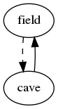

Contents
10. More attributes
|
How to program a text adventure in C
by Ruud Helderman
<r.helderman@hccnet.nl>
Licensed under
MIT License
10. More attributes
There are many possible reasons
for expanding the ‘object’ structure.
When we introduced objects in chapter 4, they had only three attributes.
In chapter 6, we added a fourth.
This is more or less the absolute minimum.
To put more detail into our adventure, we need some more attributes.
Here are a few examples.
- The command look around
gives a global description of the player’s location,
including a list of items, actors and other objects present there.
Many adventures require the player to examine these objects,
either to reveal certain clues that are needed to make progress in the game,
or simply to enhance the game’s atmosphere.
We will add an attribute details
that holds a detailed description of each object,
plus an attribute contents
that is used with objects that contain other objects.
- When the player follows a passage,
the response is invariably “OK”
followed by a description of the new location.
This is a bit dull;
it would be so much nicer to give each passage its own custom message.
We will add an attribute textGo to hold this message.
- Some passages have a ‘twist’;
they do not go where the player expects them to go.
For example, a forest path may be hiding a pitfall.
While the passage appears to be leading from location A to location B,
in reality the end point is location C, i.e. the bottom of a pit.
More common ‘twists’ are passages that are ‘blocked’:
a closed grating, a broken bridge, a narrow crack.
Suppose our cave entrance is blocked by the guard.
Any attempt to enter the cave will fail;
instead the player will stay at his original location, i.e. the field.
We could simply change the passage’s destination
to field (or NULL),
but that would result in an undesirable response to commands like
go cave and look cave:
“You don’t see any cave here.”
We need separate attributes for
the actual and the apparent end point of a passage.
We will introduce an attribute prospect to represent the latter;
the attribute destination, introduced in chapter 6,
still holds the actual end point.
In most cases, the two will be equal,
so we will have object.awk generate an appropriate default;
prospect only needs to be specified in object.txt
when it differs from destination.
- In many adventures, the player, as well as other actors in the game,
are limited in how much they can carry.
Give each item a weight;
the combined weight of all items in an actor’s inventory
should not exceed that actor’s capacity.
Give an object a very high weight to make it immovable
(a tree, a house, a mountain).
- RPG-style
adventure games will need a whole range of attributes for actors
(both player and non-player), for example health.
Objects with zero health are either dead, or they are not an actor at all.
We define seven new attributes in object.txt:
| object.txt |
- #include <stdio.h>
- #include "object.h"
- typedef struct object {
- const char *description;
- const char **tags;
- struct object *location;
- struct object *destination;
- struct object *prospect;
- const char *details;
- const char *contents;
- const char *textGo;
- int weight;
- int capacity;
- int health;
- } OBJECT;
- extern OBJECT objs[];
- - field
- description "an open field"
- tags "field"
- details "The field is a nice and quiet place under a clear blue sky."
- capacity 9999
- - cave
- description "a little cave"
- tags "cave"
- details "The cave is just a cold, damp, rocky chamber."
- capacity 9999
- - silver
- description "a silver coin"
- tags "silver", "coin", "silver coin"
- location field
- details "The coin has an eagle on the obverse."
- weight 1
- - gold
- description "a gold coin"
- tags "gold", "coin", "gold coin"
- location cave
- details "The shiny coin seems to be a rare and priceless artefact."
- weight 1
- - guard
- description "a burly guard"
- tags "guard", "burly guard"
- location field
- details "The guard is a really big fellow."
- contents "He has"
- health 100
- capacity 20
- - player
- description "yourself"
- tags "yourself"
- location field
- details "You would need a mirror to look at yourself."
- contents "You have"
- health 100
- capacity 20
- - intoCave
- description "a cave entrance to the east"
- tags "east", "entrance"
- location field
- prospect cave
- details "The entrance is just a narrow opening in a small outcrop."
- textGo "The guard stops you from walking into the cave."
- - exitCave
- description "an exit to the west"
- tags "west", "exit"
- location cave
- destination field
- details "Sunlight pours in through an opening in the cave's wall."
- textGo "You walk out of the cave."
- - wallField
- description "dense forest all around"
- tags "west", "north", "south", "forest"
- location field
- details "The field is surrounded by trees and undergrowth."
- textGo "Dense forest is blocking the way."
- - wallCave
- description "solid rock all around"
- tags "east", "north", "south", "rock"
- location cave
- details "Carved in stone is a secret password 'abccb'."
- textGo "Solid rock is blocking the way."
|
Explanation:
- Lines 9-15:
the seven new attributes.
- Lines 37 and 44:
the silver and gold coin have the same weight;
in case you find this unrealistic,
feel free to apply a more accurate unit of weight for your objects.
- Lines 52-53 and 61-62:
both the player and the non-player characters
are alive (they have health),
and they have a limited ability to carry objects
(here: the equivalent of 20 coins).
- Line 68:
I am using the cave entrance
to demonstrate the effect of attribute prospect.
Normally, prospect takes on the value of destination
(see object.awk below, specifically line 62).
By specifying prospect instead of destination
(consequently leaving the latter NULL),
we effectively ‘block’ the cave entrance
without making it disappear.
- Lines 85 and 92:
textGo is useful not only for passages,
but for non-passage objects as well
(in this case the two ‘walls’ we introduced in chapter 8).
New attributes also require an adjustment in the code generator.
| object.awk |
- BEGIN {
- count = 0;
- obj = "";
- if (pass == "c2") {
- print "\nOBJECT objs[] = {";
- }
- }
- /^- / {
- outputRecord(",");
- obj = $2;
- prop["description"] = "NULL";
- prop["tags"] = "";
- prop["location"] = "NULL";
- prop["destination"] = "NULL";
- prop["prospect"] = "";
- prop["details"] = "\"You see nothing special.\"";
- prop["contents"] = "\"You see\"";
- prop["textGo"] = "\"You can't get much closer than this.\"";
- prop["weight"] = "99";
- prop["capacity"] = "0";
- prop["health"] = "0";
- }
- obj && /^[ \t]+[a-z]/ {
- name = $1;
- $1 = "";
- if (name in prop) {
- prop[name] = $0;
- }
- else if (pass == "c2") {
- print "#error \"" FILENAME " line " NR ": unknown attribute '" name "'\"";
- }
- }
- !obj && pass == (/^#include/ ? "c1" : "h") {
- print;
- }
- END {
- outputRecord("\n};");
- if (pass == "h") {
- print "\n#define endOfObjs\t(objs + " count ")";
- }
- }
- function outputRecord(separator)
- {
- if (obj) {
- if (pass == "h") {
- print "#define " obj "\t(objs + " count ")";
- }
- else if (pass == "c1") {
- print "static const char *tags" count "[] = {" prop["tags"] ", NULL};";
- }
- else if (pass == "c2") {
- print "\t{\t/* " count " = " obj " */";
- print "\t\t" prop["description"] ",";
- print "\t\ttags" count ",";
- print "\t\t" prop["location"] ",";
- print "\t\t" prop["destination"] ",";
- print "\t\t" prop[prop["prospect"] ? "prospect" : "destination"] ",";
- print "\t\t" prop["details"] ",";
- print "\t\t" prop["contents"] ",";
- print "\t\t" prop["textGo"] ",";
- print "\t\t" prop["weight"] ",";
- print "\t\t" prop["capacity"] ",";
- print "\t\t" prop["health"];
- print "\t}" separator;
- delete prop;
- }
- count++;
- }
- }
|
Now we’re all set to start using the new attributes!
details is used in a newly recognized command
look <object>,
and textGo replaces the fixed text “OK”
in our implementation of command go.
| Sample output |
|---|
Welcome to Little Cave Adventure.
You are in an open field.
You see:
a silver coin
a burly guard
a cave entrance to the east
dense forest all around
--> look guard
The guard is a really big fellow.
--> get guard
That is way too heavy.
--> get coin
You pick up a silver coin.
--> inventory
You have:
a silver coin
--> give coin
You give a silver coin to a burly guard.
--> look guard
The guard is a really big fellow.
He has:
a silver coin
--> go cave
The guard stops you from walking into the cave.
--> go north
Dense forest is blocking the way.
--> quit
Bye!
|
| location.c |
- #include <stdbool.h>
- #include <stdio.h>
- #include <string.h>
- #include "object.h"
- #include "misc.h"
- #include "noun.h"
- void executeLook(const char *noun)
- {
- if (noun != NULL && strcmp(noun, "around") == 0)
- {
- printf("You are in %s.\n", player->location->description);
- listObjectsAtLocation(player->location);
- }
- else
- {
- OBJECT *obj = getVisible("what you want to look at", noun);
- switch (getDistance(player, obj))
- {
- case distHereContained:
- printf("Hard to see, try to get it first.\n");
- break;
- case distOverthere:
- printf("Too far away, move closer please.\n");
- break;
- case distNotHere:
- printf("You don't see any %s here.\n", noun);
- break;
- case distUnknownObject:
- // already handled by getVisible
- break;
- default:
- printf("%s\n", obj->details);
- listObjectsAtLocation(obj);
- }
- }
- }
- static void movePlayer(OBJECT *passage)
- {
- printf("%s\n", passage->textGo);
- if (passage->destination != NULL)
- {
- player->location = passage->destination;
- printf("\n");
- executeLook("around");
- }
- }
- void executeGo(const char *noun)
- {
- OBJECT *obj = getVisible("where you want to go", noun);
- switch (getDistance(player, obj))
- {
- case distOverthere:
- movePlayer(getPassage(player->location, obj));
- break;
- case distNotHere:
- printf("You don't see any %s here.\n", noun);
- break;
- case distUnknownObject:
- // already handled by getVisible
- break;
- default:
- movePlayer(obj);
- }
- }
|
Attributes weight and capacity together become
a possible reason for not being able to move certain objects around.
And a health check replaces the hard-coded whitelist of actors.
| move.c |
- #include <stdbool.h>
- #include <stdio.h>
- #include "object.h"
- #include "misc.h"
- static int weightOfContents(OBJECT *container)
- {
- int sum = 0;
- OBJECT *obj;
- for (obj = objs; obj < endOfObjs; obj++)
- {
- if (isHolding(container, obj)) sum += obj->weight;
- }
- return sum;
- }
- static void describeMove(OBJECT *obj, OBJECT *to)
- {
- if (to == player->location)
- {
- printf("You drop %s.\n", obj->description);
- }
- else if (to != player)
- {
- printf(to->health > 0 ? "You give %s to %s.\n" : "You put %s in %s.\n",
- obj->description, to->description);
- }
- else if (obj->location == player->location)
- {
- printf("You pick up %s.\n", obj->description);
- }
- else
- {
- printf("You get %s from %s.\n",
- obj->description, obj->location->description);
- }
- }
- void moveObject(OBJECT *obj, OBJECT *to)
- {
- if (obj == NULL)
- {
- // already handled by getVisible or getPossession
- }
- else if (to == NULL)
- {
- printf("There is nobody here to give that to.\n");
- }
- else if (obj->weight > to->capacity)
- {
- printf("That is way too heavy.\n");
- }
- else if (obj->weight + weightOfContents(to) > to->capacity)
- {
- printf("That would become too heavy.\n");
- }
- else
- {
- describeMove(obj, to);
- obj->location = to;
- }
- }
|
Here is one more module that can use health to identify actors.
| inventory.c |
- #include <stdbool.h>
- #include <stdio.h>
- #include "object.h"
- #include "misc.h"
- #include "noun.h"
- #include "move.h"
- void executeGet(const char *noun)
- {
- OBJECT *obj = getVisible("what you want to get", noun);
- switch (getDistance(player, obj))
- {
- case distSelf:
- printf("You should not be doing that to yourself.\n");
- break;
- case distHeld:
- printf("You already have %s.\n", obj->description);
- break;
- case distOverthere:
- printf("Too far away, move closer please.\n");
- break;
- case distUnknownObject:
- // already handled by getVisible
- break;
- default:
- if (obj->location != NULL && obj->location->health > 0)
- {
- printf("You should ask %s nicely.\n", obj->location->description);
- }
- else
- {
- moveObject(obj, player);
- }
- }
- }
- void executeDrop(const char *noun)
- {
- moveObject(getPossession(player, "drop", noun), player->location);
- }
- void executeAsk(const char *noun)
- {
- moveObject(getPossession(actorHere(), "ask", noun), player);
- }
- void executeGive(const char *noun)
- {
- moveObject(getPossession(player, "give", noun), actorHere());
- }
- void executeInventory(void)
- {
- if (listObjectsAtLocation(player) == 0)
- {
- printf("You are empty-handed.\n");
- }
- }
|
The weight check makes use of a new function weightOfContents;
it will be implemented in misc.c.
In the same module,
we also make modifications to some of the existing functions,
to support the last few attributes.
Attribute contents replaces the fixed text “You see”.
The original text was already a bit odd
when listing the player’s inventory,
but now that function listObjectsAtLocation is used to display
contents of any possible object (see function executeLook above),
we really need something more flexible.
By replacing attribute destination by prospect
in function getPassage,
we are improving responses to all commands
(not just go and look)
applied to a location that is seen lying on the other end of
a ‘passage with a twist.’
| misc.h |
- typedef enum {
- distSelf,
- distHeld,
- distHeldContained,
- distLocation,
- distHere,
- distHereContained,
- distOverthere,
- distNotHere,
- distUnknownObject
- } DISTANCE;
- extern bool isHolding(OBJECT *container, OBJECT *obj);
- extern OBJECT *getPassage(OBJECT *from, OBJECT *to);
- extern DISTANCE getDistance(OBJECT *from, OBJECT *to);
- extern OBJECT *actorHere(void);
- extern int listObjectsAtLocation(OBJECT *location);
|
| misc.c |
- #include <stdbool.h>
- #include <stdio.h>
- #include "object.h"
- #include "misc.h"
- bool isHolding(OBJECT *container, OBJECT *obj)
- {
- return obj != NULL && obj->location == container;
- }
- OBJECT *getPassage(OBJECT *from, OBJECT *to)
- {
- if (from != NULL && to != NULL)
- {
- OBJECT *obj;
- for (obj = objs; obj < endOfObjs; obj++)
- {
- if (isHolding(from, obj) && obj->prospect == to)
- {
- return obj;
- }
- }
- }
- return NULL;
- }
- DISTANCE getDistance(OBJECT *from, OBJECT *to)
- {
- return to == NULL ? distUnknownObject :
- to == from ? distSelf :
- isHolding(from, to) ? distHeld :
- isHolding(to, from) ? distLocation :
- isHolding(from->location, to) ? distHere :
- isHolding(from, to->location) ? distHeldContained :
- isHolding(from->location, to->location) ? distHereContained :
- getPassage(from->location, to) != NULL ? distOverthere :
- distNotHere;
- }
- OBJECT *actorHere(void)
- {
- OBJECT *obj;
- for (obj = objs; obj < endOfObjs; obj++)
- {
- if (isHolding(player->location, obj) && obj != player &&
- obj->health > 0)
- {
- return obj;
- }
- }
- return NULL;
- }
- int listObjectsAtLocation(OBJECT *location)
- {
- int count = 0;
- OBJECT *obj;
- for (obj = objs; obj < endOfObjs; obj++)
- {
- if (obj != player && isHolding(location, obj))
- {
- if (count++ == 0)
- {
- printf("%s:\n", location->contents);
- }
- printf("%s\n", obj->description);
- }
- }
- return count;
- }
|
To make the whole picture complete,
it would be nice to expand the generated map from the previous chapter
with dashed lines for the ‘apparent’ passages
(leading towards a prospect).

| map.awk |
- BEGIN { print "digraph map {"; }
- /^- / { outputEdges(); delete a; }
- /^[ \t]/ { a[$1] = $2; }
- END { outputEdges(); print "}"; }
- function outputEdges()
- {
- outputEdge(a["location"], a["destination"], "");
- outputEdge(a["location"], a["prospect"], " [style=dashed]");
- }
- function outputEdge(from, to, style)
- {
- if (from && to) print "\t" from " -> " to style;
- }
|
Notes:
- Please be aware that more detailed descriptions often warrant
a bigger dictionary (more objects, more tags).
For example, the command look silver coin now returns
“The coin has an eagle on the obverse.”
Very atmospheric, but it invites the player to ‘drill down’
by entering a command look eagle.
To avoid the disgrace of the game having to admit
that it does not actually know what ‘eagle’ means,
you either have to go for evasive answers
(“You see nothing special” –
quite disappointing, really),
or add an ‘ornamental’ eagle object.
You can use the location attribute to attach the eagle to the coin,
so that the eagle will follow wherever the coin goes.
- Try not to worry too much about the memory space
wasted on attributes that are only used in certain types of objects
(for example, textGo is only used in passages),
or the many duplicate string literals
(especially the default ones generated by object.awk).
We will discuss these issues in chapter 17.
- To demonstrate the use of attribute prospect,
we made the cave inaccessible.
This becomes immediately obvious when you look at the new map.png
(see the picture above);
the arrow going into the cave is dashed,
meaning it is an apparent passage, but not an actual passage.
Rest assured, the cave will be re-opened in the next chapter.
Next chapter: 11. Conditions